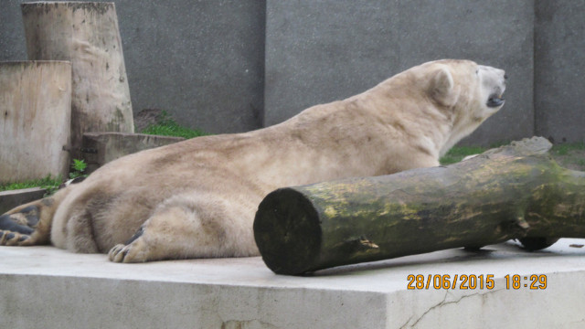

NiedźwiedŹ polarny

niedźwiedź polarny, niedźwiedź biały,gatunek ssaka z rodziny niedźwiedziowatych; Arktyka; gat. zagrożony.
CIEKAWOSTKI
Niedźwiedzie polarne to drapieżniki z rodziny niedźwiedziowatych, które zamieszkują Arktykę. Ich cechą charakterystyczną jest białe futro, które bardzo przydaje się w sztuce kamuflażu na tle śniegu i lodowców.
1. Sierść niedźwiedzi polarnych, choć pozornie biała, jest tak naprawdę niemal przezroczysta, a w połączeniu z czarną skórą i światłem, otrzymujemy znany nam efekt optyczny. Ich futro wydaje się nam białe lub kremowe, ale to tylko złudzenie.
2. Niedźwiedzie białe odżywiają się głównie fokami, a ich polowanie na ofiary bywa bardzo spektakularne, ponieważ foki są rozszarpywane w powietrzu.Zwierzęta te mają doskonały węch i potrafią wyczuć foki, które znajdują się pod grubą warstwą lodu.
3. Naukowcy alarmują, że zanikanie lodu morskiego może doprowadzić do wyginięcia niedźwiedzi polarnych jeszcze w dwudziestym pierwszym wieku. Niestety, niedźwiedzie te i tak są zabijane przez Islandczyków, kiedy dobijają do ich wyspy na krze, ponieważ stanowią zbyt wielkie zagrożenie.
4. Samiec niedźwiedzia polarnego może ważyć 700 kilogramów i byłby w stanie pozbawić człowieka głowy poprzez jedno uderzenie łapą. Świadczy to o niebywałej sile tych zwierząt.
5. Zdarza się, że niedźwiedzie polarne zasłaniają łapą nos. Nie robią tego bez przyczyny. Nos jest jedynym czarnym elementem niedźwiedzia żyjącego w białej scenerii, więc jeśli chce się wtopić w otoczenie i pozostać niezauważonym, musi go zasłonić.
6. Przodkiem niedźwiedzia polarnego jest irlandzki niedźwiedź brunatny, który żył podczas epoki lodowcowej. Naukowcy odkryli, że wszystkie białe niedźwiedzie mają właśnie tego jednego przodka.
7. Niedźwiedź polarny wcale nie jest albinosem. Osobniki cierpiące na albinizm, podobnie jak u innych zwierząt, mają czerwone oczy i nos.
8. Gruba warstwa tłuszczu i futra niedźwiedzia polarnego sprawia, że jest on praktycznie niewykrywalny przez podczerwień, która wykrywa ciepło. Widać wtedy wyłącznie jego pysk i parę, kiedy niedźwiedź wydycha powietrze.
9. Niedźwiedzie polarne niemal nie mają wrogów w środowisku naturalnym, poza człowiekiem. Jedynym wyjątkiem jest rzadko spotykany gatunek rekina, który poluje na niedźwiedzie i żyje nawet 200 lat.
10. Wątroba niedźwiedzia polarnego zawiera tak ogromne ilości witaminy A, że jej zjedzenie byłoby dla człowieka śmiertelne.